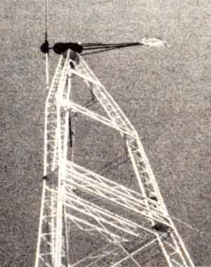

STAFF PHOTOS
MOTHER's 1,800 watt Jacobs windplant has been ""on call"" 24 hours a day for over three years now. BELOW.' Until we implement our planned supplemental photovoltaic system, a portable generator and charger will still be used occasionally to boost the batteries throughout the often windless summer month.